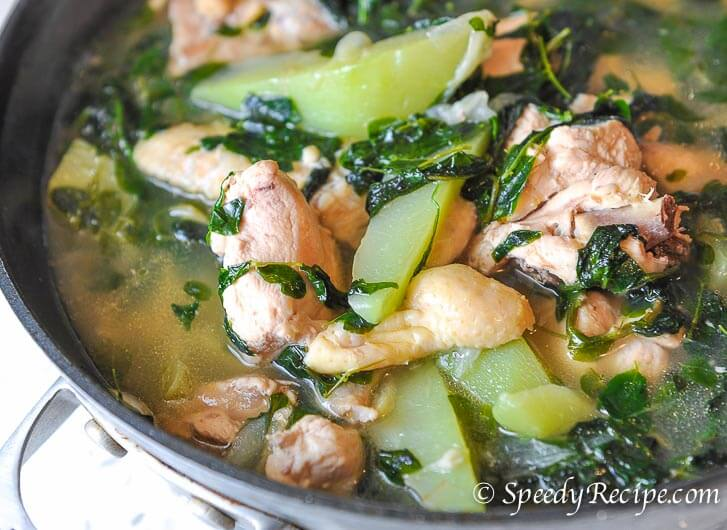

Chicken Tinola

Description
Delicious chicken soup originated from the Philippines.
Ingredients
- 2 tbsp cooking oil
- 2 cloves of garlic, minced
- 1/2 pc onion, minced
- 1/4 cup of ginger, minced
- 1/2 kg chicken, cut into serving pieces
- 2 pcs of small papaya or chayote, sliced
- 1/2 cup of hot pepper or moringga leaves
- 4 cups water
- 1 pc Knorr Chicken Cube
- ground black pepper to taste
- salt to taste
Steps
- Sauté garlic, onions, and ginger - just until the onion gets soft.
- Add chicken - sauté until the outer part turns light brown.
- Add water and simmer until it starts to boil.
- Remove scums and oil floating on the soup.
- Add Knorr Chicken cubes.
- Add hot pepper / moringga leaves
- Add sliced papaya or chayote
- Season to taste. Serve.